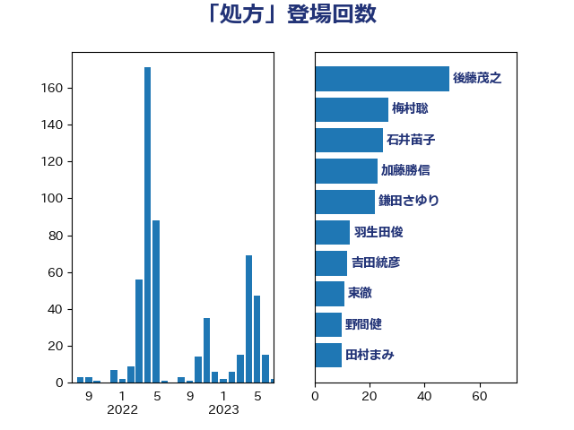

単語「処方」

| 後藤茂之 | 自由民主党 | 49 回 |
| 梅村聡 | 日本維新の会 | 29 回 |
| 石井苗子 | 日本維新の会 | 23 回 |
| 川合孝典 | 国民民主党 | 14 回 |
| 杉本和巳 | 日本維新の会 | 14 回 |
| 川田龍平 | 立憲民主党 | 13 回 |
| 羽生田俊 | 自由民主党 | 13 回 |
| 吉田統彦 | 立憲民主党 | 12 回 |
| 野間健 | 立憲民主党 | 9 回 |
| 東徹 | 日本維新の会 | 7 回 |
| 田村憲久 | 自由民主党 | 7 回 |
| 鎌田さゆり | 立憲民主党 | 7 回 |
| 伊佐進一 | 公明党 | 5 回 |
| 岸田文雄 | 自由民主党 | 5 回 |
| 福島みずほ | 社会民主党 | 5 回 |
| 仁木博文 | 無所属 | 4 回 |
| 山崎正恭 | 公明党 | 4 回 |
| 中島克仁 | 立憲民主党 | 3 回 |
| 佐藤英道 | 公明党 | 3 回 |
| 倉林明子 | 日本共産党 | 3 回 |
| 吉良州司 | 無所属 | 3 回 |
| 宮本徹 | 日本共産党 | 3 回 |
| 金村龍那 | 日本維新の会 | 3 回 |
| 一谷勇一郎 | 日本維新の会 | 2 回 |
| 三浦信祐 | 公明党 | 2 回 |
| 丸川珠代 | 自由民主党 | 2 回 |
| 伊藤孝恵 | 国民民主党 | 2 回 |
| 勝目康 | 自由民主党 | 2 回 |
| 本田顕子 | 自由民主党 | 2 回 |
| 森屋隆 | 立憲民主党 | 2 回 |
| 池下卓 | 日本維新の会 | 2 回 |
| 浜口誠 | 国民民主党 | 2 回 |
| 田中健 | 国民民主党 | 2 回 |
| 田村まみ | 国民民主党 | 2 回 |
| 芳賀道也 | 国民民主党 | 2 回 |
| 長谷川淳二 | 自由民主党 | 2 回 |
| 上川陽子 | 自由民主党 | 1 回 |
| 井上信治 | 自由民主党 | 1 回 |
| 吉田忠智 | 立憲民主党 | 1 回 |
| 坂本哲志 | 自由民主党 | 1 回 |
| 塩田博昭 | 公明党 | 1 回 |
| 室井邦彦 | 日本維新の会 | 1 回 |
| 山本博司 | 公明党 | 1 回 |
| 山際大志郎 | 自由民主党 | 1 回 |
| 杉尾秀哉 | 立憲民主党 | 1 回 |
| 柚木道義 | 立憲民主党 | 1 回 |
| 柳本顕 | 自由民主党 | 1 回 |
| 橋本岳 | 自由民主党 | 1 回 |
| 浅田均 | 日本維新の会 | 1 回 |
| 田村智子 | 日本共産党 | 1 回 |
| 白石洋一 | 立憲民主党 | 1 回 |
| 石垣のりこ | 立憲民主党 | 1 回 |
| 石川大我 | 立憲民主党 | 1 回 |
| 美延映夫 | 日本維新の会 | 1 回 |
| 西村康稔 | 自由民主党 | 1 回 |
| 野田聖子 | 自由民主党 | 1 回 |
| 鈴木義弘 | 国民民主党 | 1 回 |
| 長友慎治 | 国民民主党 | 1 回 |
| 青柳陽一郎 | 立憲民主党 | 1 回 |
| 高木かおり | 日本維新の会 | 1 回 |